1. background
用PCA的降维-升维的过程来类比auto-encoder的编码-解码过程。
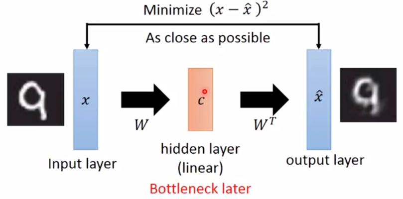
PCA降维：高维特征的图像 = 低维特征的图像
PCA升维：低特征的图像 = 高维特征的图像
auto-encoder的编码：高维特征图像 经过encoder --> 向量c
auto-encoder的解码：向量c 经过decoder --> 高维特征图像
把编码和解码通常放在一起训练，中间的向量c可以看作是一个hidden layer的activation。c又称为bottleneck.
deep NN版的auto-encoder
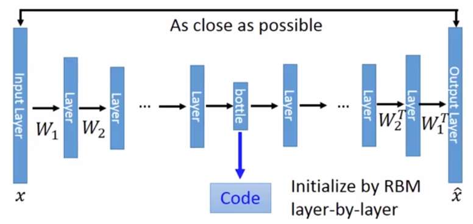
auto-encoder中的编码器和解码器都是deep NN，那么就称为深度自编码器（deep auto-encoder）。
2. deep auto-encoder编码器的应用
2.1. 用于图像压缩与解压
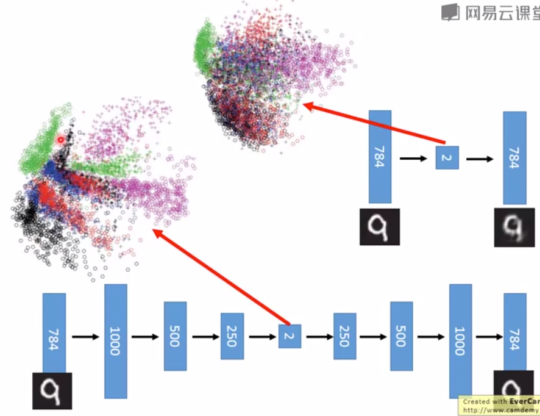
图中上面是用PCA算法把28 28的图像压缩成2维以及还原成28 28的效果。
图中下面是用深度自编码器把把28 28的图像压缩成2维以及还原成28 28的效果。
从结果上看，深度自编码器的效果更好。
2.2. 用于text检索
- 把原文压缩成一个向量
- 把问题也压缩成一个向量
- 找到与问题最接近的原文向量
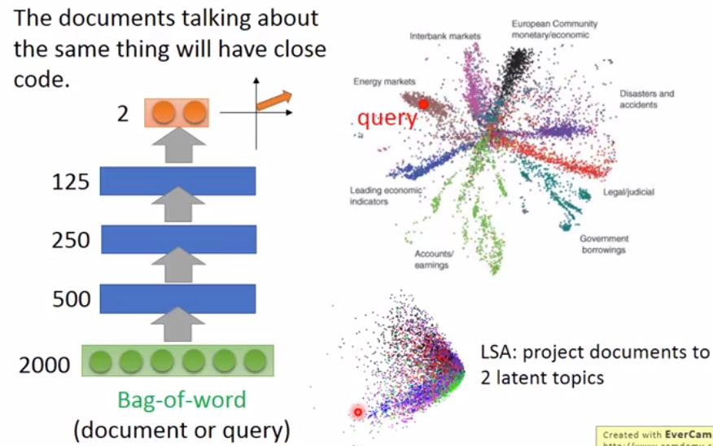
2.3. 用于图像检索
- 把图像编码成c
- 基于c作检索
2.4. 用于pre-training DNN --- Greedy Layer-wise Pre-training
Greedy Layer-wise Pre-training：用于有大量unlabelled data和少量labelled data的场景。
如果目标是训练这样一个网络：
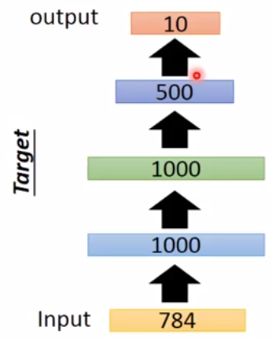
那么预训练过程如下：
- 训练一个auto-encoder：
是输出，是输出。目标是与尽量接近。hidden layer第1层的activation为code。
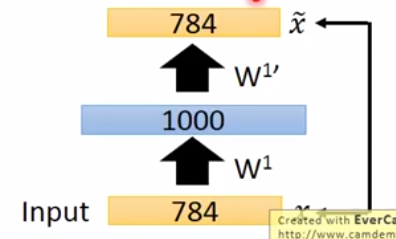
Tips:如果hidden layer的unit数比上一层要多，则需要在这一层加上一个很强的正则化，以防这一层“什么都不做”。 - 训练完去掉decoder部分，fix住encoder部分的weights为W1
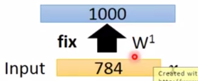 - 再训练一个auto-encoder:
输出第一个auto-encoder得到的c，命令为向量。输出是。目标是和尽量接近。hidden layer第1层的参数不更新。hidden layer第2层的activation为code。
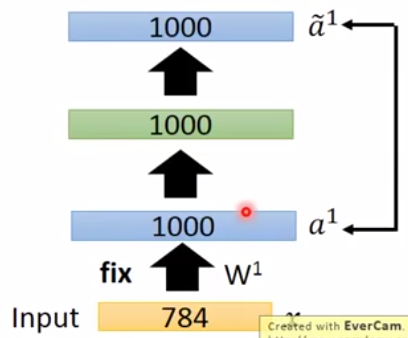 - 训练完去掉decoder部分，fix住encoder部分的weights为W2
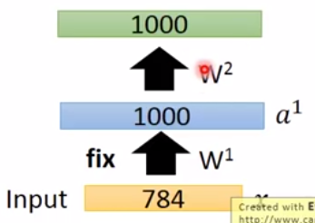 - 现在已经有两个参数fix的hidden layer，用同样的方法pre-training第三个hidden layer，并fix住参数为W3。
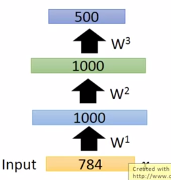 - 至此为止pre-training结束，把真实的输出接在hidden layer 3后面。W1、W2、W3用之前fix住的值，W4随机初始化。然后正常训练。
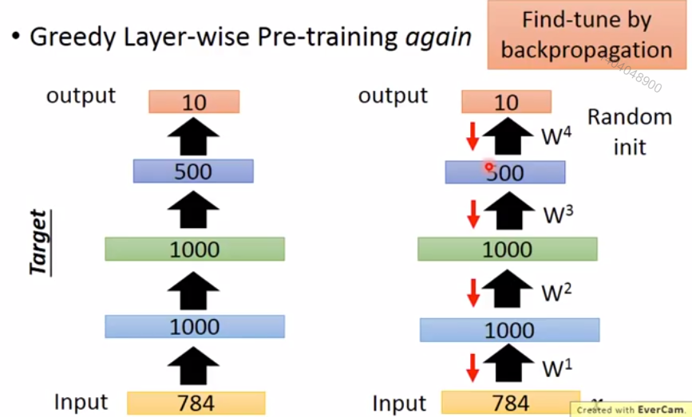
3. 提升auto-encoder的效果
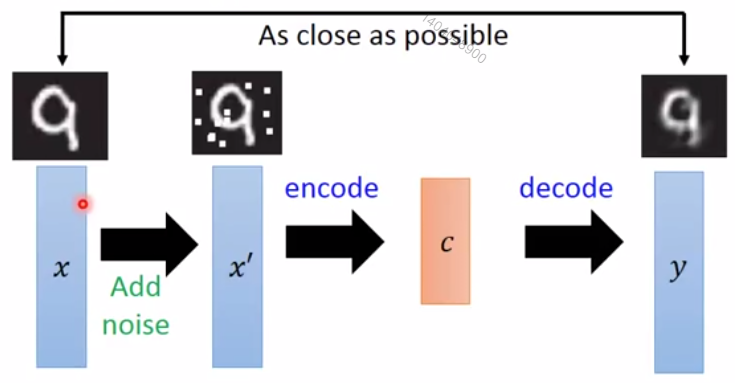
4. deep auto-encoder解码器的应用
4.1. 用于CNN生成图像
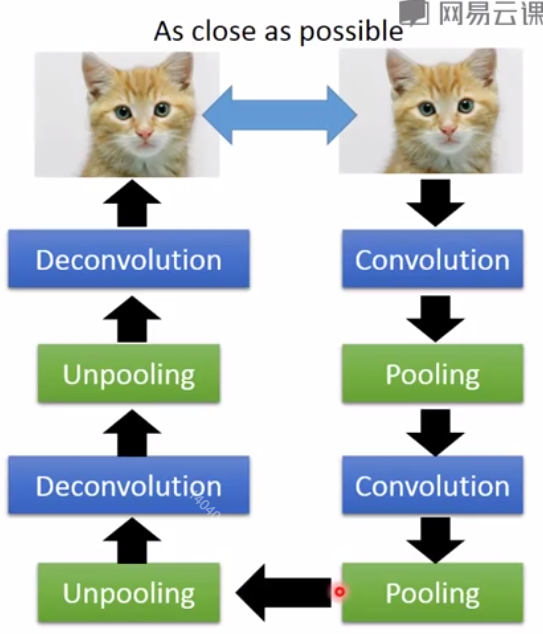
4.1.1. 怎样做unpooling操作？
方法一：
pooling时记录数据来自原图哪个位置
unpooling时恢复原图大小，把值也恢复到记录的位置。其它位置置0。
方法二：
pooling时不需要记录位置。
unpooling时都恢复成相同的值。
4.1.2. 怎样做Deconvolution?
Deconvolution就是Convolution.
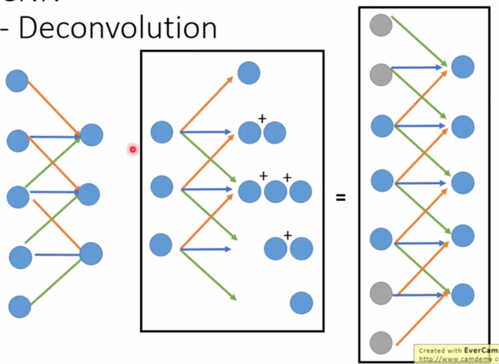
4.1.3. 怎样生成图像？
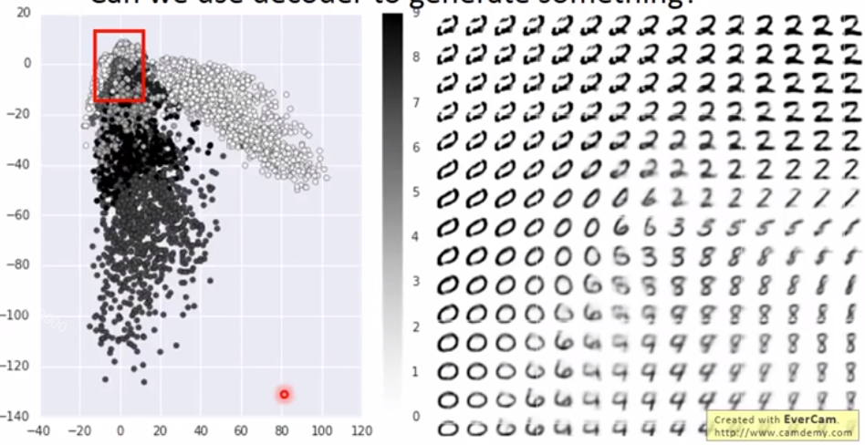
在c的向量空间选择一些点，经过decoder生成图像。